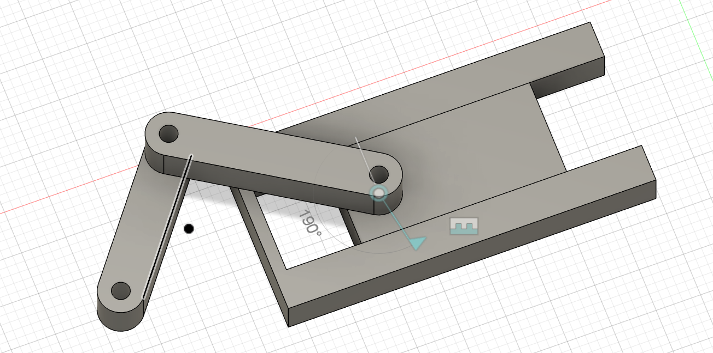
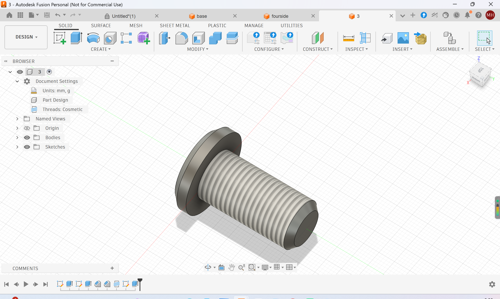

Project Concept
For this kinetic‑sculpture assignment, I built a crank‑slider piston‑style mechanism. It replicates the working principle of a cylinder‑piston system. Two hinged linkage arms are connected by a custom‑designed pivot bolt. The sliding block is constrained to only move horizontally inside a fixed outer frame. A DC‑motor‑driven crank will spin the linkage, which pushes the inner block to slide repeatedly back and forth.

My Fusion‑360 assembly of the linkage, sliding block and outer frame for the piston kinetic sculpture.

Custom‑made threaded bolt, which acts as the pivot pin to connect the two linkage arms at the hinge joint.
Manufacturing & Assembly Plan
- Cut the acrylic frame, sliding block and linkage arms at the saw station; smooth edges using hand files and the bench grinder.
- Drill mounting holes on each component and tap threads for the pivot bolt at the drill station.
- 3D‑print the custom pivot bolt modelled in Fusion 360, then assemble the linkages with the bolt.
- Solder header pins onto my Arduino microcontroller, then wire up the DC‑motor power circuit.
- Mount the motor, attach it to the linkage crank, then test the full horizontal piston‑style motion.
Documentation Plan
Once the physical sculpture is fully assembled, I will record a short video/GIF of the working piston‑style movement, then embed the video on this webpage to document the full project process.